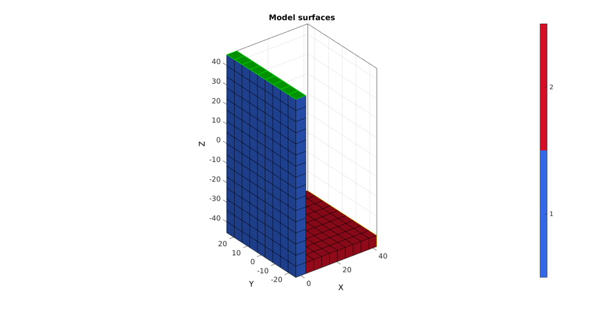
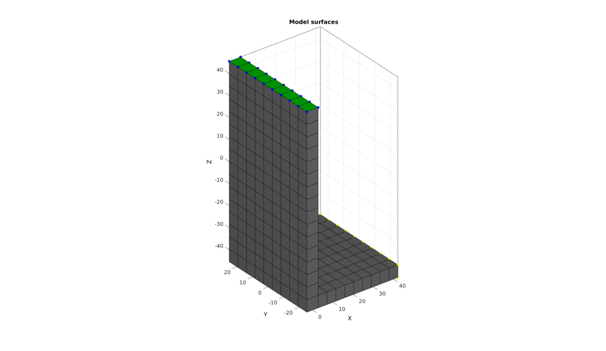
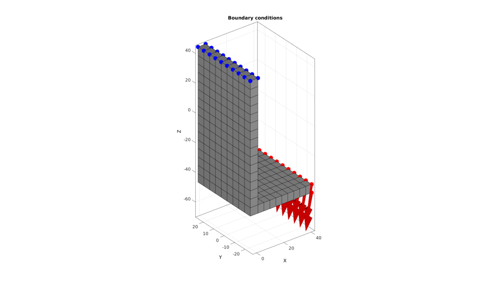
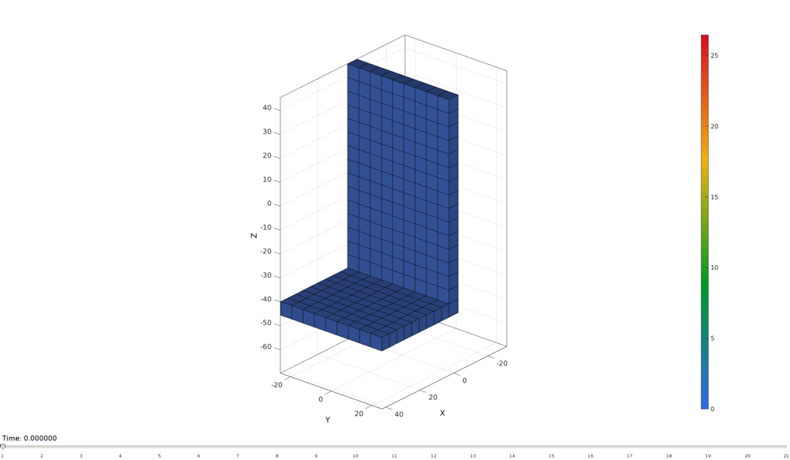

DEMO_FEBio_beam_L_force
Below is a demonstration for:
- The creation of an FEBio model whereby force is applied to a selection of nodes, in this case to the end of a bar
- Running an FEBio job with MATLAB
- Importing FEBio results into MATLAB
Contents
clear; close all; clc;
Plot settings
fontSize=15; faceAlpha1=0.8; faceAlpha2=1; edgeColor=0.25*ones(1,3); edgeWidth=1.5; markerSize=50;
Control parameters
% path names defaultFolder = fileparts(fileparts(mfilename('fullpath'))); savePath=fullfile(defaultFolder,'data','temp'); modelNameEnd='tempModel'; modelName=fullfile(savePath,modelNameEnd); %Specifying dimensions and number of elements L=85.4; h=5.6; b=50; t=45; phi=10; sampleWidth=5.6; sampleThickness=b; sampleHeight=L+h; numElementsWidth=round(sampleWidth/h); numElementsThickness=round(sampleThickness/h); numElementsHeight=round(sampleHeight/h); forceMagnitude=2800; %2800 E_youngs1=6550; % 6.55e10 Pa = 65.5 GPa = 6550 MPa v1=0.3; E_youngs2=7200; %72 Gpa = 7200 v2=0.3; nRefine=0; % FEA control settings numTimeSteps=20; %Number of time steps desired max_refs=25; %Max reforms max_ups=0; %Set to zero to use full-Newton iterations opt_iter=10; %Optimum number of iterations max_retries=5; %Maximum number of retires dtmin=(1/numTimeSteps)/100; %Minimum time step size dtmax=1/numTimeSteps; %Maximum time step size
CREATING MESHED BOX
%Create box 1 boxDim=[sampleWidth sampleThickness sampleHeight]; %Dimensions boxEl=[numElementsWidth numElementsThickness numElementsHeight]; %Number of elements [box1]=hexMeshBox(boxDim,boxEl); E=box1.E; V=box1.V; Fb=box1.Fb; Cb=box1.faceBoundaryMarker; X=V(:,1); Y=V(:,2); Z=V(:,3); VE=[mean(X(E),2) mean(Y(E),2) mean(Z(E),2)];
% Plotting boundary surfaces cFigure; hold on; title('Model surfaces','FontSize',fontSize); gpatch(Fb,V,Cb,'k',faceAlpha1); colormap(gjet(6)); icolorbar; axisGeom; camlight headlight; set(gca,'FontSize',fontSize); drawnow;
Make last element set "h" heigh
F_bottom=Fb(Cb==5,:);
logicBottomElements=any(ismember(E,F_bottom),2);
E_bottom=E(logicBottomElements,:);
[FE_bottom,~]=element2patch(E_bottom);
indV_FE_bottom=unique(FE_bottom(:));
mean_E_bottom=mean(V(indV_FE_bottom,:),1);
Z=V(:,3);
zMax=max(V(indV_FE_bottom,3));
zThreshold=zMax-(h/2);
indV_bottom=unique(F_bottom(:));
indV_bottomTop=indV_FE_bottom(V(indV_FE_bottom,3)>zThreshold);
% V(indV_bottomTop,3)=min(V(:,3))+h;
Find side faces to extrude
F_side=Fb(Cb==2,:); logicSideBottom=all(ismember(F_side,indV_FE_bottom),2); F_side_bottom=F_side(logicSideBottom,:); layerThickness=t-h; numStepsExtrude=ceil(layerThickness/h)+1; dirSet=1; [Eq,Vq,Fq_start,Fq_end]=quadThick(F_side_bottom,V,dirSet,layerThickness,numStepsExtrude); [Fq,~]=element2patch(Eq);
% Plotting boundary surfaces cFigure; hold on; title('Model surfaces','FontSize',fontSize); gpatch(Fb,V,0.5*ones(1,3),'none',0.2); % gpatch(F_bottom,V,'g','k',1); % gpatch(FE_bottom,V,'g','k',0.9); gpatch(F_side_bottom,V,'r','k',1); gpatch(Fq,Vq,'r','k',0.5);
% gpatch(Fq_start,Vq,'b','k',1); % gpatch(Fq_end,Vq,'b','k',1);
plotV(V(indV_bottom,:),'b.','MarkerSize',25); plotV(V(indV_bottomTop,:),'y.','MarkerSize',25);
plotV(Vq,'k.','MarkerSize',25);
% colormap(gjet(6)); icolorbar; axisGeom; camlight headlight; set(gca,'FontSize',fontSize); drawnow;
Merging element sets
F_top=Fb(Cb==6,:);
F_force=Fq_end;
F_force=F_force+size(V,1);
Eq=Eq+size(V,1);
elementMaterialIndices=[ones(size(E,1),1); 2*ones(size(Eq,1),1);];
E=[E;Eq];
V=[V;Vq];
[~,ind1,ind2]=unique(pround(V,5),'rows');
V=V(ind1,:);
E=ind2(E);
F_top=ind2(F_top);
F_force=ind2(F_force);
[FE,CE]=element2patch(E,elementMaterialIndices);
Plotting boundary surfaces
cFigure; hold on; title('Model surfaces','FontSize',fontSize); gpatch(FE,V,CE,'k',1); gpatch(F_force,V,'y','y',1); gpatch(F_top,V,'g','g',1); % plotV(V,'k.','MarkerSize',25); colormap(gjet(4)); icolorbar; axisGeom; camlight headlight; set(gca,'FontSize',fontSize); drawnow;
Refining elements
C=[1:1:size(E,1)]'; if nRefine>0 splitMethod=1; [E,V,C,CV]=subHex(E,V,nRefine,splitMethod); end elementMaterialIndices=elementMaterialIndices(C); [FE,CF]=element2patch(E,C); [D]=patchEdgeLengths(FE,V); indTop=find(V(:,3)>(max(V(:,3))-max(D(:))/2)); indForce=find(V(:,1)>(max(V(:,1))-max(D(:))/2)); logicTopFaces=all(ismember(FE,indTop),2); logicForceFaces=all(ismember(FE,indForce),2); F_top=FE(logicTopFaces,:); F_force=FE(logicForceFaces,:); indBoundaryFaces=tesBoundary(FE,V); Fb=FE(indBoundaryFaces,:);
Plotting boundary surfaces
cFigure; hold on; title('Model surfaces','FontSize',fontSize); gpatch(Fb,V,0.5*ones(1,3),'k',1); gpatch(F_force,V,'r','k',1); gpatch(F_top,V,'g','k',1); plotV(V(indTop,:),'b.','MarkerSize',25); plotV(V(indForce,:),'y.','MarkerSize',25); % plotV(V,'k.','MarkerSize',25); % colormap(gjet(6)); icolorbar; axisGeom; camlight headlight; set(gca,'FontSize',fontSize); drawnow;
DEFINE BC's
%Supported nodes bcSupportList=unique(F_top(:)); %Prescribed force nodes bcPrescribeList=unique(F_force(:)); numForceNodes=numel(bcPrescribeList); forceNormVec=[0 0 -1]; [R]=euler2DCM([0 phi/180*pi 0]); forceNormVec=(R*forceNormVec')'; bcPrescribeForceVectors=(forceMagnitude*forceNormVec(ones(1,numel(bcPrescribeList)),:))/numForceNodes;
Visualize BC's
cFigure; hold on; title('Boundary conditions','FontSize',fontSize); gpatch(Fb,V,0.75*ones(1,3),'k',1); plotV(V(bcSupportList,:),'b.','MarkerSize',markerSize); plotV(V(bcPrescribeList,:),'r.','MarkerSize',markerSize); quiverVec(V(bcPrescribeList,:),bcPrescribeForceVectors,25,'r'); axisGeom; camlight headlight; set(gca,'FontSize',fontSize); drawnow;
CONSTRUCTING FEB MODEL
FEB_struct.febio_spec.version='2.0'; FEB_struct.Module.Type='solid'; % Defining file names FEB_struct.run_filename=[modelName,'.feb']; %FEB file name FEB_struct.run_logname=[modelName,'.txt']; %FEBio log file name %Geometry section FEB_struct.Geometry.Nodes=V; FEB_struct.Geometry.Elements={E}; %The element sets FEB_struct.Geometry.ElementType={'hex8'}; %The element types FEB_struct.Geometry.ElementMat={elementMaterialIndices}; FEB_struct.Geometry.ElementsPartName={'Bar'}; %Material section FEB_struct.Materials{1}.Type='neo-Hookean'; FEB_struct.Materials{1}.Properties={'E','v'}; FEB_struct.Materials{1}.Values={E_youngs1,v1}; FEB_struct.Materials{2}.Type='neo-Hookean'; FEB_struct.Materials{2}.Properties={'E','v'}; FEB_struct.Materials{2}.Values={E_youngs2,v2}; %Step specific control sections FEB_struct.Control.AnalysisType='static'; FEB_struct.Control.Properties={'time_steps','step_size',... 'max_refs','max_ups',... 'dtol','etol','rtol','lstol'}; %Control section FEB_struct.Control.AnalysisType='static'; FEB_struct.Control.Properties={'time_steps','step_size',... 'max_refs','max_ups',... 'dtol','etol','rtol','lstol'}; FEB_struct.Control.Values={numTimeSteps,1/numTimeSteps,... max_refs,max_ups,... 0.001,0.01,0,0.9}; FEB_struct.Control.TimeStepperProperties={'dtmin','dtmax','max_retries','opt_iter'}; FEB_struct.Control.TimeStepperValues={dtmin,dtmax,max_retries,opt_iter}; %Defining node sets FEB_struct.Geometry.NodeSet{1}.Set=bcSupportList; FEB_struct.Geometry.NodeSet{1}.Name='bcRigidList'; FEB_struct.Geometry.NodeSet{2}.Set=bcPrescribeList; FEB_struct.Geometry.NodeSet{2}.Name='bcPrescribeList'; %Adding BC information FEB_struct.Boundary.Fix{1}.bc='x'; FEB_struct.Boundary.Fix{1}.SetName=FEB_struct.Geometry.NodeSet{1}.Name; FEB_struct.Boundary.Fix{2}.bc='y'; FEB_struct.Boundary.Fix{2}.SetName=FEB_struct.Geometry.NodeSet{1}.Name; FEB_struct.Boundary.Fix{3}.bc='z'; FEB_struct.Boundary.Fix{3}.SetName=FEB_struct.Geometry.NodeSet{1}.Name; %Adding load information FEB_struct.Loads.Nodal_load{1}.bc='x'; FEB_struct.Loads.Nodal_load{1}.lc=1; % FEB_struct.Loads.Nodal_load{1}.SetName=FEB_struct.Geometry.NodeSet{1}.Name; FEB_struct.Loads.Nodal_load{1}.Set=bcPrescribeList; FEB_struct.Loads.Nodal_load{1}.nodeScale=bcPrescribeForceVectors(:,1); FEB_struct.Loads.Nodal_load{2}.bc='y'; FEB_struct.Loads.Nodal_load{2}.lc=1; % FEB_struct.Loads.Nodal_load{2}.SetName=FEB_struct.Geometry.NodeSet{1}.Name; FEB_struct.Loads.Nodal_load{2}.Set=bcPrescribeList; FEB_struct.Loads.Nodal_load{2}.nodeScale=bcPrescribeForceVectors(:,2); FEB_struct.Loads.Nodal_load{3}.bc='z'; FEB_struct.Loads.Nodal_load{3}.lc=1; % FEB_struct.Loads.Nodal_load{3}.SetName=FEB_struct.Geometry.NodeSet{1}.Name; FEB_struct.Loads.Nodal_load{3}.Set=bcPrescribeList; FEB_struct.Loads.Nodal_load{3}.nodeScale=bcPrescribeForceVectors(:,3); %Load curves FEB_struct.LoadData.LoadCurves.id=1; FEB_struct.LoadData.LoadCurves.type={'linear'}; FEB_struct.LoadData.LoadCurves.loadPoints={[0 0;1 1;]}; %Adding output requests FEB_struct.Output.VarTypes={'displacement','stress','relative volume'}; %Specify log file output run_disp_output_name=[modelNameEnd,'_node_out.txt']; run_force_output_name=[modelNameEnd,'_force_out.txt']; FEB_struct.run_output_names={run_disp_output_name,run_force_output_name}; FEB_struct.output_types={'node_data','node_data'}; FEB_struct.data_types={'ux;uy;uz','Rx;Ry;Rz'};
SAVING .FEB FILE
FEB_struct.disp_opt=0; %Display waitbars
febStruct2febFile(FEB_struct);
Warning: febStruct2febFile is depricated and will be removed in future releases. Update your codes to use febioStruct2xml, see HELP_febioStruct2xml (furthermore febio_spec version 2.5 is recommended) %%%%%%%%%%%%%%%%%%%%%%%%%%%%%%%%%%%%%%%%%%%%% --- Writing FEBio XML object --- 22-Jun-2018 15:58:01 Using febio_spec: 2.0 Adding Module level Adding Control level Adding Material level Adding Geometry level ----> Adding node field ----> Adding element field ----> Adding hex8 element entries.... ----> Adding NodeSet field Adding Boundary level ----> Defining fix type boundary conditions Adding Loads level ----> Defining node loads ----> Adding nodal loads ----> Adding nodal loads ----> Adding nodal loads Adding LoadData level ----> Defining load curves Adding Output level ----> Adding plotfile field ----> Adding logfile field Writing .feb file --- Done --- 22-Jun-2018 15:58:01
RUNNING FEBIO JOB
FEBioRunStruct.run_filename=FEB_struct.run_filename; FEBioRunStruct.run_logname=FEB_struct.run_logname; FEBioRunStruct.disp_on=1; FEBioRunStruct.disp_log_on=1; FEBioRunStruct.runMode='external';%'internal'; FEBioRunStruct.t_check=0.25; %Time for checking log file (dont set too small) FEBioRunStruct.maxtpi=1e99; %Max analysis time FEBioRunStruct.maxLogCheckTime=3; %Max log file checking time [runFlag]=runMonitorFEBio(FEBioRunStruct);%START FEBio NOW!!!!!!!!
%%%%%%%%%%%%%%%%%%%%%%%%%%%%%%%%%%%%%%%%%%%%% --- STARTING FEBIO JOB --- 22-Jun-2018 15:58:01 Waiting for log file... Proceeding to check log file...22-Jun-2018 15:58:02 ------- converged at time : 0.05 ------- converged at time : 0.1 ------- converged at time : 0.15 ------- converged at time : 0.2 ------- converged at time : 0.25 ------- converged at time : 0.3 ------- converged at time : 0.35 ------- converged at time : 0.4 ------- converged at time : 0.45 ------- converged at time : 0.5 ------- converged at time : 0.55 ------- converged at time : 0.6 ------- converged at time : 0.65 ------- converged at time : 0.7 ------- converged at time : 0.75 ------- converged at time : 0.8 ------- converged at time : 0.85 ------- converged at time : 0.9 ------- converged at time : 0.95 ------- converged at time : 1 --- Done --- 22-Jun-2018 15:58:03
if runFlag==1 %i.e. a succesful run
IMPORTING NODAL DISPLACEMENT RESULTS
Importing nodal displacements from a log file
[~, N_disp_mat,~]=importFEBio_logfile(fullfile(savePath,FEB_struct.run_output_names{1})); %Nodal displacements
IMPORTING NODAL FORCES
Importing nodal forces from a log file
[time_mat, N_force_mat,~]=importFEBio_logfile(fullfile(savePath,FEB_struct.run_output_names{2})); %Nodal forces
time_mat=[0; time_mat(:)]; %Time
N_disp_mat=N_disp_mat(:,2:end,:);
sizImport=size(N_disp_mat);
sizImport(3)=sizImport(3)+1;
N_disp_mat_n=zeros(sizImport);
N_disp_mat_n(:,:,2:end)=N_disp_mat;
N_disp_mat=N_disp_mat_n;
DN=N_disp_mat(:,:,end);
DN_magnitude=sqrt(sum(DN(:,3).^2,2));
V_def=V+DN;
[CF]=vertexToFaceMeasure(Fb,DN_magnitude);
Axis limits for plotting
minD=min(V+min(N_disp_mat,[],3),[],1);
maxD=max(V+max(N_disp_mat,[],3),[],1);
axisLim=[minD(1) maxD(1) minD(2) maxD(2) minD(3) maxD(3)];
Plotting the deformed model
hf=cFigure;
xlabel('X','FontSize',fontSize); ylabel('Y','FontSize',fontSize); zlabel('Z','FontSize',fontSize); hold on;
hp=gpatch(Fb,V_def,CF,'k',1);
gpatch(Fb,V,0.5*ones(1,3),'k',0.25);
view(3); axis tight; axis equal; grid on; box on;
colormap(gjet(250)); colorbar;
caxis([0 max(DN_magnitude)]);
view(130,25);
camlight headlight;
set(gca,'FontSize',fontSize);
axis(axisLim);
drawnow;
animStruct.Time=time_mat;
for qt=1:1:size(N_disp_mat,3)
DN=N_disp_mat(:,:,qt);
DN_magnitude=sqrt(sum(DN(:,3).^2,2));
V_def=V+DN;
[CF]=vertexToFaceMeasure(Fb,DN_magnitude);
%Set entries in animation structure
animStruct.Handles{qt}=[hp hp]; %Handles of objects to animate
animStruct.Props{qt}={'Vertices','CData'}; %Properties of objects to animate
animStruct.Set{qt}={V_def,CF}; %Property values for to set in order to animate
end
anim8(hf,animStruct);
drawnow;
 end

GIBBON www.gibboncode.org
Kevin Mattheus Moerman, gibbon.toolbox@gmail.com
GIBBON footer text
License: https://github.com/gibbonCode/GIBBON/blob/master/LICENSE
GIBBON: The Geometry and Image-based Bioengineering add-On. A toolbox for image segmentation, image-based modeling, meshing, and finite element analysis.
Copyright (C) 2018 Kevin Mattheus Moerman
This program is free software: you can redistribute it and/or modify it under the terms of the GNU General Public License as published by the Free Software Foundation, either version 3 of the License, or (at your option) any later version.
This program is distributed in the hope that it will be useful, but WITHOUT ANY WARRANTY; without even the implied warranty of MERCHANTABILITY or FITNESS FOR A PARTICULAR PURPOSE. See the GNU General Public License for more details.
You should have received a copy of the GNU General Public License along with this program. If not, see http://www.gnu.org/licenses/.